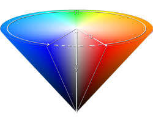

Peering into the depths of color -- 1/28
Color Depth: The amount of data used to represent a single pixel
| Size | Color Options | Description |
|---|---|---|
| 1 bit | 1 color, on | off |
| 2 bit | 1 color with intensity | |
| 3 bit | red, green, and blue (8 colors) | |
| 4 bit | red, green, blue, and intensity | |
| 6 bit | red, green, blue, with individual intensity | |
| 3 byte | R G B, each with 256 values |
Defining Color
RGBA: Red, Green, Blue, Alpha (transparency) HSB: Hue, Saturation (how deep color is), Brightness

Image File Formats
Raster vs Vector
Vector formats represent images as a series of drawing instructions.
(*.svg -- Scalable Vector Graphics)
Raster formats represent images as a grid of pixels (think how a tv
updates)
Uncompressed vs. compressed (Raster)
Uncompressed images contain data for each pixel (BMP, TIFF, RAW)
Compressed formats use a compression algorithm to minimize file
size
Lossless vs Lossy
Lossless compression algorithms contain enough info to exatly recreate
the original image (PNG -- Portable Network Graphics, GIF -- Graphics
Interchage Format)
Lossy compression algorithms do not retain all the details of the
original image (JPEG -- Joint Photographic Experts Group)
PPM (Portable PixMap): Uncompressed raster format (RGB triplets in ascii or binary)
P3 (or P6 if you're writing in binary)
5 5 (pixel len and width of file)
255
255 255 0 255 255 0 255 255 0 255 255 0 255 255 0
255 255 0 255 255 0 255 255 0 255 255 0 255 255 0
255 255 0 255 255 0 255 0 255 255 255 0 255 255 0
255 255 0 255 255 0 255 255 0 255 255 0 255 255 0
255 255 0 255 255 0 255 255 0 255 255 0 255 255 0
convert is a useful tool to convert images between formats